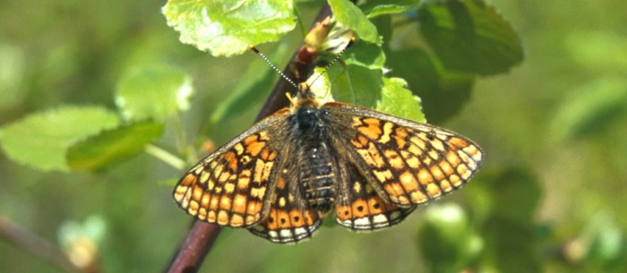

Niklas Wahlberg
Laboratory of Genetics
Department of Biology
University of Turku
20014 Turku
Finland
Phone +358 2 333 5569
Fax +358 2 333 6680
E-mail:

Niklas in New Orleans, photo by Phil DeVries
I am currently a University Researcher at the Laboratory of Genetics, Department of Biology, University of Turku. My main area of research is the systematics and evolution of the butterfly family Nymphalidae. Projects I am involved in:
Evolutionary history of Nymphalidae
I have been working on the evolutionary history of Nymphalidae since 1998, and this butterfly family continues to hold my fascination. We are uncovering interesting patterns of diversification and are finding plausible reasons behind the differences in diversity of the various groups within Nymphalidae. This work is very reliant on a large number of collaborators, and on going projects can be seen on the Research-page.
Factors affecting diversification in Lepidoptera
Our results on the family Nymphalidae suggest that major climatic changes over geological time scales have had a major impact on the diversification of these butterflies. This begs the question of whether such effects can be seen in other groups of Lepidoptera. I have expanded my research to include other groups of Lepidoptera, such as Noctuoidea (with Reza Zahiri) and Geometridae (with Toomas Tammaru). In addition, in collaboration with Tommi Nyman, we have received funding from the Kone Foundation to look at factors affecting diversification rates over millions of years in Lepidoptera and Hymenoptera (sawflies in particular). Carlos Peña is a postdoc working on this project.
Using biological methods to study the evolution of the Finno-Ugric language group
In addition to my work on Lepidoptera, I am involved in a project using biological methods to study the evolution of languages, in particular the Finno-Ugric languages. Our project, BEDLAN, is a multidiscipline, multiuniversity collaboration aiming to bring novel interpretations of the evolution and development of our fascinating language, which is so different to the majority of the European languages. At the University of Turku, I am working with Outi Vesakoski on this project and we are supervising the PhD studies of Terhi Honkola together.
Tropical Ichneumonidae diversity
The diversity of parasitoid wasps in the family Ichneumonidae was thought to be low in the Amazon region, contrary to most other groups of organisms. The work of Ilari Sääksjärvi has changed this perspective, as he has discovered that there are large numbers of undescribed ichneumonid species in the rainforest canopy. In collaboration with him, I am co-supervising the PhD thesis of Anu Veijalainen, which aims to use DNA-barcoding methods to quickly sort through large numbers of specimens to find distinct haplotype groups that can then be investigated in more detail to see whether they represent new undescribed species.
Trichoptera of Finland
There are 216 species of Trichoptera known from Finland. Some of these species are morphologically difficult to identify and their taxonomic status is questioned. In collaboration with Juha Salokannel, we are looking at whether DNA barcoding can help us define and identify species in Finland.
Evaluating the diet of Daubenton's Bat using DNA barcoding
The diet of insectivorous bats is not well known. As part of Eero Vesterinen's PhD thesis, co-supervised by myself and in collaboration with Kai Norrdahl and Ilari Sääksjärvi, we are looking at the diet of Daubenton's Bat by sampling all the flying insects in the habitats that the bat occurs in and DNA barcoding them. In addition we are taking fecal samples from the bats themselves and using ancient DNA techniques to extract and sequence DNA of their prey items, in order to identify and quantify the insects in their diet.
Evolution of viruses
Molecular phylogenetic methods can be applied also to study the evolution of viruses. In collaboration with Lihong Liu, I have been working on the evolution of pestiviruses and hepatitis E viruses.
Brief CV
- 2011-2015 University Researcher, University of Turku
- 2006-2011 Academy Research Fellow (funded by Academy of Finland), University of Turku
- 2003-2006 Forskarassistent (Research Fellow, funded by Vetenskapsrådet), Stockholm University
- 2001-2002 Postdoc Stockholm University (funded by Academy of Finland), working with Sören Nylin
- 1996-2000 PhD University of Helsinki, supervised by Ilkka Hanski, The ecology and evolution of melitaeine butterflies.
- 1991-1996 MSc studies at the University of Helsinki
Links:
- My publications
- Webmaster of:
Nymphalidae.net
Click the image of Euphydryas aurinia to enter the Nymphalidae pages